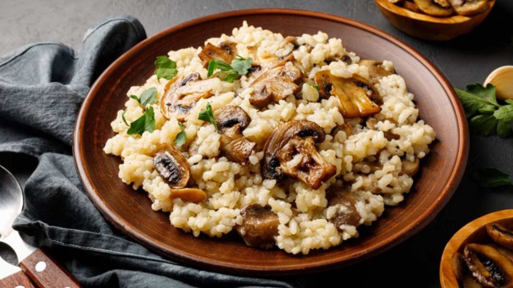

الوصفات الايطالية


الروزيتو الايطالية

المقادير
- ثلاثة اكواب ماء
- كوبين مرق الدجاج
- ربع كوب زبدة
- نصف بصلة مفرومة
- كوب ريزوتو
- نصف كوب كريمة
- ربع كوب جبن بارميزان مبشور
- ملح وفلفل
- بقدونس مفروم للتزيين
طريقة التحضير
- نضع الماء مع المرق على نار
- نضع 2 ملعقة كيبرة زبدة في قدر على نار متوسطة ونضيف البصل
- نضع الريزتو ثم نضيف ثلث كوب من مزيج المرق والماء، ويقلب حتى يتم امتصاصه. نضيف كوب آخر من المرق حتى يتم امتصاص السوائل كلها
- نمرر هذه الخطوة بإضافة كوب من المرق في كل مرة والانتظار حتى يتم امتصاصها حتى تنتهي كمية المرق
- ويترك على نار هادئه لمدة 25 دقيقة حتى يصبح قوامه كالكريمة
- نضيف الكريمة، الجبنة، الملح والفلفل وباقي كمية الزبدة، يقلب لمدة دقيقتين
- نزينه بالبقدونس ويقدم